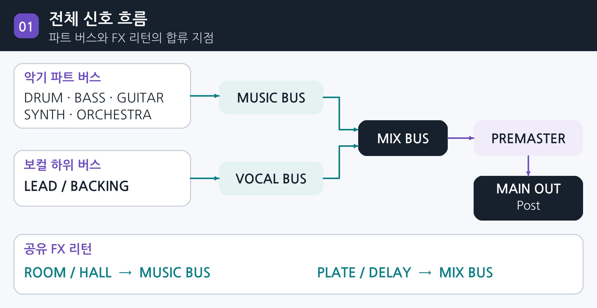
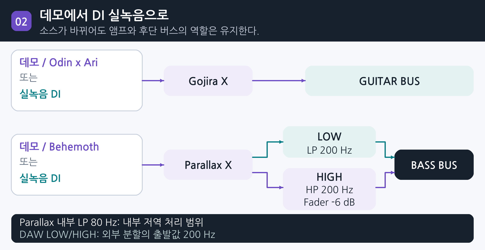
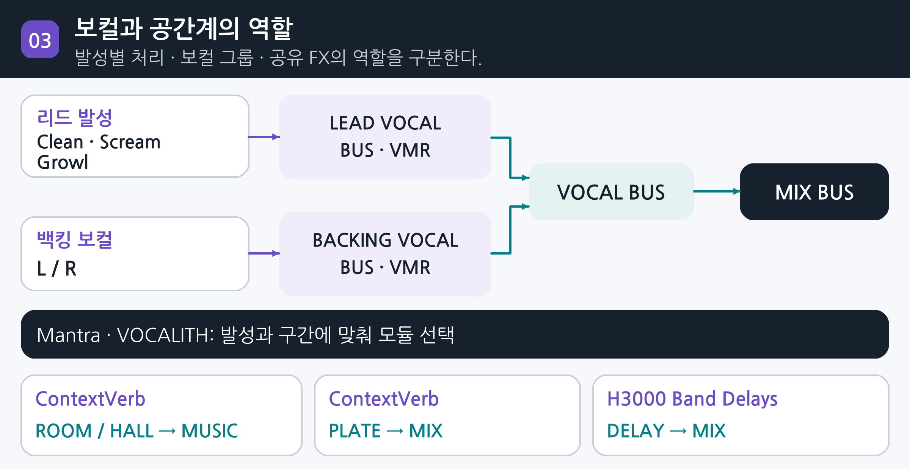
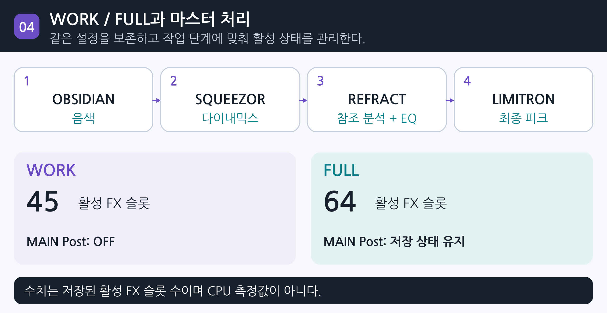

DEADWIRE / PRODUCTION RESEARCH
Develop Device 중심의
DAW 템플릿 구성과 운용 기준
RESEARCH JOURNAL / 2026.10.29 / v1.3
작업 템플릿의 구축 목적
DEADWIRE의 Drop A 기타·베이스, 여러 발성의 보컬, 피아노와 오케스트라를 같은 기준으로 제작하기 위해 공통 작업 환경을 정리했다. 반복 세팅을 줄이고 보유한 악기와 플러그인의 역할을 고정해, 편곡과 연주·음색 판단에 집중하는 것이 목적이다.
SOURCE
기타·베이스 DI 녹음 / 데모: Odin x Ari · Behemoth
PROCESS
OBSIDIAN · SQUEEZOR · VOCALITH · VMR
DELIVERY
WORK / FULL · 레벨 매칭 · 출력 검증
기준 프로젝트 Varg av Valkyria
7현 기타 Drop A · 5현 베이스 Drop A · Studio One / Studio Pro
01 / PURPOSE
작업 템플릿의 구축 목적
DEADWIRE의 편성을 반복 제작할 수 있는 공통 작업 환경
DEADWIRE의 제작 편성은 7현 Drop A 기타와 5현 Drop A 베이스를 중심으로 피아노, 오케스트라, 신스, 클린 보컬, 스크림과 그로울을 포함한다. 곡마다 동일한 기준으로 제작을 시작하고 앨범 전체의 음향을 일관되게 판단할 수 있도록 공통 작업 환경을 구성한다.
이번 템플릿을 만든 목적은 곡을 시작할 때마다 악기를 불러오고 버스와 공간계를 연결하는 반복 작업을 줄이는 데 있다. 라우팅과 처리 역할을 미리 정해 두면, 제작 중에는 리프와 보컬의 관계, 저역의 무게, 오케스트라의 전개처럼 음악적 판단에 집중할 수 있다.
기타와 베이스는 데모에서 실녹음으로 이어지는 구조로 운용한다. Odin x Ari와 Behemoth는 작곡·편곡을 확인하는 데모용이며, 실제 녹음에서는 기타·베이스의 DI 오디오를 받아 같은 앰프와 후단 버스 구조에서 작업한다.
보유한 도구를 일관된 제작 기준으로 연결한다
기존에 사용하던 iZotope Ozone 시리즈에서 Develop Device 중심으로 작업 구성을 옮기며, 이미 구매한 도구를 파트별 처리부터 최종 출력까지 활용하기로 했다. 각 제품의 선정 이유와 배치 목적을 정리해, 다음 곡에서도 같은 기준으로 판단할 수 있도록 한다.
| 제작 목적 | 템플릿에 반영한 기준 |
|---|---|
| 반복 준비 시간 절감 | 악기·파트 버스·공유 FX를 준비해 같은 출발점에서 곡을 시작한다. |
| 편성별 독립 제어 | 베이스 LOW/HIGH, 리드/백킹, 클린/스크림/그로울, 드럼 마이크군을 구분한다. |
| 곡 사이의 일관성 | 채널명·출력 경로·비교 기준을 유지하고 각 곡의 소스에 맞춰 수치를 조정한다. |
| 작업 단계별 운용 | WORK와 FULL을 함께 두고 필요한 처리만 활성화하면서 설정과 원본을 보존한다. |
제작 목적은 DEADWIRE의 편성·보유 도구·작업 요구를 기준으로 정리했다. 기준 템플릿 [2].
02 / TRANSITION
Ozone에서 Develop Device 중심으로
보유한 도구의 활용을 소스·버스·공간계·마스터의 공통 제작 기준으로 확장한다.
기존 제작 환경에서는 iZotope Ozone 시리즈를 사용하였다. 본 템플릿은 보유한 Develop Device 제품과 프리셋의 활용 범위를 넓히고, 악기별 처리부터 버스·공간계·최종 출력까지 연결되는 공통 작업 기준을 수립하기 위해 Develop Device 중심으로 구성하였다.
DEADWIRE의 편성에서는 저음역 기타와 베이스, 여러 발성의 보컬, 피아노와 오케스트라가 서로 다른 처리를 요구한다. 각 단계에서 무엇을 정리하고 어떤 버스로 합칠지 먼저 정해 두면, 곡이 바뀌어도 같은 구조에서 소스와 편곡에 집중할 수 있다.
이번 전환에서 우선한 네 가지
| 선택 기준 | Develop Device 중심 구성에 반영한 이유 |
|---|---|
| 보유 자산의 활용 | 구매한 플러그인·프리셋·IR을 각 파트의 출발점으로 정리한다. 매번 새 체인을 만드는 시간을 줄이고, 곡에 맞는 조정에 집중한다. |
| 처리 기준의 통일 | OBSIDIAN과 SQUEEZOR를 트랙·버스·마스터에 배치한다. 같은 도구를 사용하되 각 위치에서 EQ와 압축이 담당할 역할을 구분한다. |
| 파트별 역할의 연결 | VOCALITH는 보컬, ContextVerb는 공유 공간, REFRACT와 LIMITRON은 마스터의 분석·음색·출력을 담당하게 해 전체 흐름을 연결한다. |
| 반복 제작과 실녹음 전환 | Odin·Behemoth 데모와 실제 DI가 공통 앰프·버스 구조를 사용한다. 후단의 역할을 유지하면서 입력 조건과 곡에 맞춰 설정을 조정한다. |
마스터에서도 처리 목적을 분명히 한다
마스터 Post는 OBSIDIAN의 전체 음색 보정, SQUEEZOR의 다이내믹스 정리, REFRACT의 레퍼런스 분석과 EQ, LIMITRON의 최종 피크·출력 제어로 구성한다. 개별 악기와 버스에서 만든 균형을 바탕으로 각 단계가 필요한 만큼 작동하도록 운용한다.
전환 배경: 기존 Ozone 사용과 보유 Develop Device 자산 활용. 제품별 역할과 배치 기준 [1,2].
03 / INSTRUMENT SELECTION
가상악기 6종의 선정 이유
연주 편집, 편곡 역할, 보유 프리셋의 재사용성을 기준으로 선택한다.
Odin x Ari와 Behemoth는 기타·베이스 데모의 MIDI 편집에 사용한다. 실제 녹음은 DI 오디오로 작업하며, 드럼·피아노·신스·스트링은 각 음원의 역할에 맞춰 배치한다.
| 악기 | 선정 이유 | 담당 파트 |
|---|---|---|
| Odin x Ari | 기타 리프와 아티큘레이션을 MIDI로 편집하는 데모용으로 선택했다. Gojira X로 톤을 확인하며, 실녹음은 기타 DI를 사용한다. | 데모용 기타 리듬·쿼드·리드 |
| Behemoth Bass | Drop A 베이스라인의 음정·타이밍·강약을 MIDI로 편집하고, Parallax X로 데모를 확인하기 위해 선택했다. 실녹음은 베이스 DI를 사용한다. | 데모용 베이스 BASS MIDI |
| Divine Destruction Drums | 파트별 Close와 OH·Room·Balcony를 내부에서 조절하면서 DAW에서는 8개 스템으로 묶어 처리할 수 있어 선택했다. | 드럼 전체 8 stereo stems |
| Serum 2 | 보유한 Develop Device 프리셋을 활용하고 패드·신스의 어택, 릴리즈와 배음을 편곡에 맞게 조정하기 위해 선택했다. | PAD 1·2 스트링 음색 후보 |
| Omnisphere 3 | 베이스 신스와 분위기 레이어의 음색을 확장하기 위해 선택했다. 현재 BASS SYNTH에 연결하며, 스트링 음색의 선택 후보로도 둔다. | BASS SYNTH 스트링 음색 후보 |
| Arturia Piano V3 | 피아노에서 오케스트라와 메탈로 확장되는 편곡에서 멜로디와 화성의 중심을 유지하기 위해 선택했다. | 피아노 ORCHESTRA BUS |
데모와 DI 실녹음을 같은 후단 구조로 연결한다
데모는 Odin·Behemoth, 실녹음은 연주한 DI를 소스로 삼는다. 기타는 Gojira X와 GUITAR BUS, 베이스는 Parallax X와 LOW/HIGH·BASS BUS로 처리한다. 소스를 바꿀 때 입력 레벨과 톤을 다시 맞춘다.
실제 로드 악기 6종과 Arturia Piano V3의 ORCHESTRA BUS 연결은 기준 파일 [2]에서 확인했다.
04 / TONE & DYNAMICS
톤과 다이내믹스 도구의 선정 이유
연주 소스의 캐릭터부터 최종 출력까지 처리 목적을 구분한다.
같은 제품도 배치 위치에 따라 담당 역할이 달라진다. 앰프는 소스의 캐릭터, EQ는 주파수 관계, 컴프레서는 강약과 결속, 마스터 후단은 전체 음색과 출력을 관리하도록 선택했다.
| 이펙트 | 선정 이유 | 주요 배치 |
|---|---|---|
| Gojira X | 기타 DI 실녹음과 Odin 데모의 앰프·캐비넷 톤을 같은 환경에서 관리하기 위해 선택했다. 구매한 Gojira용 프리셋과 IR도 활용한다. | 기타 DI / 데모 소스 채널 |
| Parallax X | 저역 압축과 중·고역 왜곡을 나눠 만들 수 있어, Drop A 베이스의 무게와 리프 발음을 함께 조절하는 톤 처리기로 선택했다. | 베이스 소스 LOW/HIGH 분기 전 |
| OBSIDIAN | 악기 보정, 베이스 대역 분리, 버스와 FX 리턴의 주파수 균형·공진을 같은 EQ 환경에서 관리하기 위해 선택했다. | 악기·파트 버스 FX 리턴·마스터 |
| SQUEEZOR | 트랙 강약, 버스 결속, 드럼 병렬 밀도에 서로 다른 압축 역할을 부여하면서 조작 기준을 통일하기 위해 선택했다. | 드럼·베이스 버스·마스터 |
| REFRACT | 레퍼런스 분석과 EQ를 연결해 전체 음색의 방향을 검토하는 별도 단계를 두기 위해 선택했다. | MAIN OUT Post |
| LIMITRON | 최종 피크와 출력 제어를 다른 톤·다이내믹스 처리와 구분해 관리하기 위해 선택했다. | MAIN OUT Post 최종 출력 단계 |
한 도구에 여러 역할을 맡길 때의 기준
OBSIDIAN과 SQUEEZOR를 여러 채널에 사용하는 이유는 반복되는 EQ·압축 작업의 조작 기준을 통일하기 위해서다. 킥, 베이스, 기타 버스와 마스터에는 각각 필요한 대역과 반응 속도를 설정한다.
제품 배치와 실제 체인 [2]. Parallax의 내부 대역별 처리 [4], EQ·다이내믹스 운용 기준 [1].
05 / VOCAL & SPACE
보컬과 공간계 도구의 선정 이유
발성의 전달력, 보컬 표현, 공간의 깊이를 별도로 조정한다.
보컬은 발성별 음색 정리와 하모니·더블링 같은 표현 확장을 함께 다뤄야 한다. 이를 개별 보컬, 보컬 그룹, 공유 공간계로 나눠 배치하기 위해 다음 도구를 선택했다.
| 이펙트 | 선정 이유 | 주요 배치 |
|---|---|---|
| Mantra | 클린의 음정과 톤을 정리하고 하모니·포먼트·더블링·공간계로 표현을 확장하기 위해 선택했다. 모듈은 발성에 맞춰 쓴다. | 개별 보컬 합창·특수 레이어 |
| VOCALITH 2 | EQ·다이내믹스·치찰음·공진·채도와 출력 관리를 묶어 발성별 보컬을 믹스에 맞추기 위해 선택했다. | 개별 보컬 후단 정리·색채 |
| VMR | 리드와 백킹의 하위 버스에서 여러 보컬의 톤과 다이내믹스를 함께 조정하기 위해 선택했다. | LEAD VOCAL BUS BACKING VOCAL BUS |
| ContextVerb Pro 2 | ROOM·PLATE·HALL의 역할을 구분하면서 같은 플러그인 계열로 공통 공간을 관리하기 위해 선택했다. | 공유 리버브 FX 리턴 |
| H3000 Band Delays Mk II | 독립된 딜레이 리턴에서 반복음의 패턴과 음색을 조정하기 위해 선택했다. 1/4·1/8 경로로 보컬과 리드의 프레이즈를 연출한다. | 공유 딜레이 FX 리턴 |
기능을 배치하는 기준
Mantra와 VOCALITH는 보컬 종류별 보정과 표현에, VMR은 리드·백킹 그룹의 통일감에 사용한다. 공통 잔향과 반복음은 ContextVerb와 Eventide의 FX 리턴으로 관리해, 각 파트의 Send 양과 리턴 음색을 따로 조절한다.
보컬·FX 체인 [2], VOCALITH와 공간계 운용 기준 [1], Mantra의 처리·하모니·Post FX 기능 [3].
06 / ROUTING
신호 경로를 구조로 고정한다
직접 신호, 파트 버스, 공간계 리턴의 합류 지점을 명확히 구분한다.
기타·베이스는 데모 음원 또는 실녹음 DI를 앰프와 파트 버스로 보낸다. 악기군은 MUSIC BUS, 보컬은 VOCAL BUS로 묶어 MIX BUS에서 합친다. 반주와 보컬을 따로 조정하면서 최종 균형을 관리한다.
그림의 상위 버스는 각 악기군의 파트 버스를 포함한다.
| 구분 | 담당 역할 | 기준 구성 |
|---|---|---|
| 파트 버스 | 동일 악기군의 음량·톤·다이내믹스 | DRUM / BASS / GUITAR / SYNTH / ORCHESTRA |
| FX 리턴 | Send로 받은 잔향·반복음의 병렬 처리 | ROOM / PLATE / HALL / DELAY |
| Mix FX 슬롯 | 여러 입력 채널에 관여하는 전용 포맷 | 현재 템플릿은 비어 있음 |
| MIX / PREMASTER | 전체 균형과 최종 출력 경로 관리 | MIX → PREMASTER → MAIN OUT |

근거: 기준 템플릿의 실제 연결 [2], 호스트의 버스·Send·Mix Engine FX 정의 [6].
07 / DRUMS
드럼은 내부 균형과 외부 스템을 병행한다
선정 기준: 파트별 마이크 균형과 공통 공간의 독립 제어
Divine Destruction은 각 파트의 근접음과 OH·Room·Balcony를 조절하면서 DAW에서는 공통 마이크군을 묶을 수 있어 선택했다. 이를 내부 믹서의 세밀한 균형과 외부 8스템의 일괄 처리로 연결하며, MIDI 매핑은 Toontrack으로 통일한다.
| DAW 출력 | 채널 | 포함되는 신호 |
|---|---|---|
| Out 1-2 | KICK | 좌·우 킥의 Close와 One Shot |
| Out 3-4 | SNARE | 스네어 Close와 One Shot |
| Out 5-6 | HI HAT | 좌·우 하이햇의 근접 신호 |
| Out 7-8 | TOMS | 탐 6개의 근접 신호 |
| Out 9-10 | CYMBALS | 하이햇을 제외한 심벌 근접 신호 |
| Out 11-12 | OVERHEADS | 모든 파트의 오버헤드 성분 |
| Out 13-14 | ROOM MICS | 모든 파트의 룸 성분 |
| Out 15-16 | BALCONY | 모든 파트의 발코니 성분 |
처리 역할
근접 채널은 어택과 몸통, OH는 심벌과 폭, Room·Balcony는 깊이와 잔향을 담당한다. 빠른 더블킥과 블라스트에서는 공간 마이크의 양을 구간별로 낮춰 다음 타격을 가리지 않게 한다.
탐은 OBSIDIAN과 SQUEEZOR로 정리한다. 모든 드럼 출력은 DRUM BUS로 합치고, 별도의 SQUEEZOR 병렬 경로를 MUSIC BUS에 낮게 섞어 밀도를 보강한다.
출력표·플러그인 구성은 기준 템플릿 저장값 [2]. 드럼 처리 원칙은 [1]을 본 구성에 적용.
08 / DROP A GUITARS
기타의 밀도는 연주와 캐비넷에서 만든다
선정 기준: 데모 편곡의 신속한 확인과 DI 실녹음의 앰프·캐비넷 처리
Odin x Ari는 MIDI로 리프와 아티큘레이션을 확인하는 데모용으로 선택했다. Gojira X는 데모와 실제 기타 DI의 앰프·캐비넷·IR 톤을 담당한다. 데모는 Odin → Gojira X → GUITAR BUS, 실녹음은 기타 DI → Gojira X → GUITAR BUS로 운용한다.
| 구간 | 운용 결론 |
|---|---|
| 소스와 게이트 | 발음과 아티큘레이션을 먼저 정리한다. 게이트는 음 사이의 노이즈만 제어하고 짧은 뮤트음의 시작을 보존한다. |
| 앰프 게인 | 화음 분리와 피킹 어택이 남는 범위를 기준으로 정한다. 트랙을 겹칠수록 각 트랙의 왜곡량을 함께 재평가한다. |
| 캐비넷 / IR | 단독 저역량보다 전체 믹스에서의 위치를 우선한다. Gojira용 구매 프리셋·IR은 동일 레벨로 비교한다. |
| GUITAR BUS | SQUEEZOR로 합주감을 정리하고 OBSIDIAN으로 팜뮤트 저중역과 거친 존재감을 필요한 만큼 제어한다. |
쿼드 리듬의 운용 표준
실녹음은 독립적으로 연주한 DI 네 테이크를 사용한다. 메인 두 테이크를 양끝에, 보조 두 테이크를 L70/R70에 배치한다. 보조 트랙은 중앙의 보컬·스네어를 가리지 않게 섞는다.
소스·버스 체인과 내부 팬은 [2]. 캐비넷·더블링·EQ 운용 원칙은 [1].
09 / DROP A BASS
베이스는 무게와 발음을 따로 제어한다
선정 기준: 데모 편곡·DI 실녹음과 저역·배음의 독립 제어 / A0 = 27.5 Hz
Behemoth는 Drop A 라인을 MIDI로 정리하는 데모용, Parallax X는 저역 압축과 중·고역 왜곡을 나누는 톤 처리기로 선택했다. 실제 녹음은 베이스 DI → Parallax X → LOW/HIGH → BASS BUS로 운용한다. 데모도 같은 후단 구조를 사용한다.
주출력 → LOW
Post-fader Send → HIGH
| 제어 위치 | 기준 상태 | 해석 |
|---|---|---|
| Parallax 내부 | Low LP 80 Hz | 플러그인 내부 저역 처리 범위 |
| DAW LOW | OBSIDIAN LP 200 Hz SQUEEZOR 6:1 / 10 ms / 100 ms | 저역 무게와 지속음의 일관성 |
| DAW HIGH | OBSIDIAN HP 200 Hz 채널 페이더 -6 dB | 어택·배음·미드 발음의 블렌드 |
| BASS BUS | OBSIDIAN → SQUEEZOR | 합산된 베이스와 킥의 관계 정리 |
200 Hz는 이 템플릿의 출발점이다. 같은 차단 주파수만으로 완전한 상보 분할이나 위상 정렬이 보장되지는 않는다. 두 경로를 합쳤을 때의 레벨, 모노 저역, 플러그인 지연을 함께 확인한다.

주파수·컴프·라우팅은 저장값 [2]. Parallax 내부 병렬 처리와 캐비넷 적용 범위는 [4].
10 / VOCALS
보컬은 발성과 기능에 따라 역할을 나눈다
선정 기준: 발성별 보정, 보컬 표현 확장, 그룹 음색의 통일
Mantra는 음정·톤과 하모니 등 보컬 표현을 넓히기 위해, VOCALITH는 보컬의 공진·치찰음·다이내믹스를 믹스에 맞추기 위해 선택했다. VMR은 여러 보컬을 묶는 하위 버스에 배치한다. 리드와 백킹을 각각 처리한 뒤 VOCAL BUS에서 합친다.
| 도구 | 주요 담당 | 활용 기준 |
|---|---|---|
| Mantra | 피치·Sculpt·다이내믹스·캐릭터 하모니·더블링·특수 공간계 | 클린의 음정과 톤, 합창 레이어에 활용. 스크림·그로울은 원발성을 중심으로 필요한 모듈만 활성화. |
| VOCALITH 2 | 잔여 공진·치찰음·EQ·채도 출력과 보컬 내장 FX | Mantra 이후 남는 문제를 정리하거나 파트 전용 색채를 추가. 모든 기능을 상시 켤 필요는 없음. |
| VMR | 리드와 백킹 하위 버스의 톤 통일 | 같은 그룹의 여러 보컬이 한 덩어리로 들리도록 정리. 개별 단어의 보정은 트랙에서 수행. |
그로울 전용 시작점
LEAD GROWL은 Mantra와 VOCALITH를 별도로 갖는다. 튠·하모니·게이트·내장 공간계는 꺼둔 상태에서 시작하고, HP 80 Hz 및 Mantra의 300 Hz -1.5 dB를 녹음에 맞춰 조절한다. 빈 채널에서는 두 인서트도 비활성 상태를 유지한다.
게이트와 EQ의 중복 사용
직렬 사용 자체는 가능하다. 첫 EQ는 입력의 불필요한 저역, 다음 EQ는 압축·왜곡 뒤의 공진, 버스 EQ는 합산 음색처럼 역할을 나눈다. 두 게이트는 같은 음절의 앞뒤를 과하게 자를 수 있으므로 닫힘·홀드·릴리즈와 실제 발음을 함께 확인한다.

현재 채널 구성·그로울 시작값 [2]. VOCALITH 기능 [1], Mantra 모듈 및 Sculpt 분석 상태 [3].
11 / SPACE & LAYERS
공간과 레이어는 곡의 깊이를 담당한다
선정 기준: 공통 잔향의 관리와 독립 딜레이의 프레이즈 연출
ContextVerb Pro 2는 ROOM·PLATE·HALL을 같은 환경에서 관리하기 위해, Eventide H3000 Band Delays Mk II는 독립 리턴에서 반복음의 패턴과 음색을 조절하기 위해 선택했다. 공통 공간은 FX 리턴에, 보컬 내장 FX는 파트의 캐릭터와 구간 연출에 배정한다.
| 리턴 | 프로세서 | 현재 합류 지점 / 운용 역할 |
|---|---|---|
| ROOM | ContextVerb Pro 2 | MUSIC BUS / 악기의 짧은 공간 |
| PLATE | ContextVerb Pro 2 | MIX BUS / 보컬·스네어의 잔향 |
| HALL | ContextVerb Pro 2 | MUSIC BUS / 패드·리드·오케스트라의 깊이 |
| DELAY 1/4 | H3000 Band Delays Mk II → OBSIDIAN | MIX BUS / 프레이즈 끝의 반복음 |
| DELAY 1/8 | H3000 Band Delays Mk II → OBSIDIAN | MIX BUS / 짧은 리듬 반복 |
100 BPM의 시간 기준
4분음표 600 ms · 8분음표 300 ms · 점8분음표 450 ms. 계산식은 60,000 ÷ BPM이며, 채널명과 별개로 실제 플러그인의 Sync·음표 분할·피드백을 확인한다. Send를 문장 끝에 올리고 다음 가사의 시작에서 내려 전달력을 유지한다.
신스와 스트링의 배치
PAD 1·2는 Serum 2를 기준으로 운용하고, Develop Device 구매 프리셋을 곡의 역할에 따라 선택한다. 스트링은 Serum 또는 Omnisphere에서 어택·릴리즈·음역이 편곡에 맞는 음색을 고른다. STRINGS AUDIO·BRASS·WOODWINDS·ORCH PERC·ORCH FX는 ORCHESTRA BUS로 묶는다.
FX 제품·출력 경로·악기 슬롯 상태 [2]. 공유 공간·레이어 운용 원칙 [1]. 시간값은 100 BPM 계산값.
12 / MIX & MASTER
음량은 출력 경로 전체에서 관리한다
선정 기준: 주파수 균형, 결속, 참조 분석과 최종 출력의 역할 분리
OBSIDIAN과 SQUEEZOR는 전체 톤과 다이내믹스를 같은 처리 기준으로 정리하기 위해 선택했다. REFRACT는 레퍼런스 분석·EQ, LIMITRON은 최종 피크·출력을 담당한다. MIX BUS → PREMASTER → MAIN OUT으로 연결해 각 단계의 역할을 구분한다.
| MAIN OUT Post 순서 | 연구일지의 기능 구분 |
|---|---|
| 1 OBSIDIAN | 전체 주파수 균형과 필요한 보정 |
| 2 SQUEEZOR | 전체 다이내믹스와 결속 |
| 3 REFRACT | 레퍼런스 분석과 EQ 처리 |
| 4 LIMITRON | 최종 피크·출력 제어 |
레벨 판정 기준
| 측정 | 판단하는 대상 | 운용 결론 |
|---|---|---|
| Peak dBFS | 순간 최대 진폭 | 클리핑과 헤드룸 확인 |
| Integrated LUFS | 측정 구간의 평균 라우드니스 | 전체 곡과 비교곡의 음량 판단 |
| True Peak | 재구성 신호의 추정 피크 | 내보내기·인코딩의 출력 여유 판단 |
최종 음량은 미터 단위, 재생 구간, 마스터 체인과 출력 게인을 함께 기록해 판단한다. 믹싱 단계는 피크 여유를 확보하고, 최종 음량은 동일 라우드니스의 레퍼런스와 비교해 드럼 어택·보컬 전달력을 기준으로 결정한다.
마스터 체인·레퍼런스 경로 [2]. 헤드룸·동일 레벨 비교·마스터링 판단 기준 [1].
13 / WORKFLOW
작업용과 전체 설정용을 분리해 운용한다
설정 보존, 재생 부담, 재사용성을 별도로 관리한다.
| 항목 | WORK | FULL |
|---|---|---|
| 용도 | 편집·편곡·일상 재생 | 전체 처리 상태의 비교·복구 |
| 기존 음색 설정 | 프리셋 값 보존 | 프리셋 값 보존 |
| MAIN Post 4개 | OFF | 사용자 저장 상태 유지 |
| 빈 MIDI 기타 경로 | 8채널의 12개 인서트 OFF GUITAR BUS 3개 OFF | 사용자 저장 상태 유지 |
| 활성 FX 슬롯 | 45개 | 64개 |
| 그로울 채널 | 빈 채널 / 인서트 OFF | 빈 채널 / 인서트 OFF |
| 로드 설정 | 악기 14개 유지 | 악기 14개 유지 |
활성 FX 수는 저장 상태를 센 값이다. CPU 감소율이나 재생 안정성의 측정 결과로 해석하지 않는다. 바이패스, 호스트 비활성화, 악기 언로드, 오디오 변환은 서로 다른 작업이다.
호스트 운용 기준
현재 기본 템플릿은 44.1 kHz다. 버퍼는 최대값 고정 대신 실제 프로젝트로 비교하며, 믹싱에서는 1024 samples를 비교 기준으로 둘 수 있다. 성능 모니터에서 무거운 장치와 직렬 버스 경로를 확인하고, 확정한 파트는 원본을 보존하며 오디오로 변환한다.
새 곡과 기존 곡에 적용
새 곡은 빈 템플릿의 악기·버스·FX 구조를 재사용한다. 기본 편곡은 100 BPM·4/4·64마디다. 기존 곡은 별도 사본에서 필요한 채널과 설정을 옮기고, 원곡의 템포·MIDI·오디오를 유지한 채 악기 출력과 Send 목적지를 확인한다.

두 모드의 수치·템플릿 형식 [2]. 버퍼·직렬 처리·성능 모니터·오디오 변환 원칙 [5,6].
14 / ADOPTED STANDARD
제작 표준으로 남기는 결론
한 곡의 수치를 복제하기보다 역할과 검증 기준을 반복해서 사용한다.
| 채택 기준 | 다음 곡에서도 유지할 내용 |
|---|---|
| 소스와 톤 | 실녹음: 기타 / 베이스 DI · 데모: Odin x Ari / Behemoth 공통 후단: 기타 Gojira X / 베이스 Parallax X · 드럼: Divine Destruction |
| 역할 분리 | 베이스 LOW·HIGH, 보컬 Clean·Scream·Growl·Backing, 드럼 8스템 |
| Develop Device 활용 | OBSIDIAN·SQUEEZOR·VOCALITH·ContextVerb·REFRACT·LIMITRON을 역할별 배치 |
| 공간계 | 공유 리턴의 출력 경로를 명시하고 필요한 구간에서 Send를 조절 |
| 품질 판정 | 동일 음량 A/B, 모노 합산, 작은 음량의 보컬·베이스 식별, 출력 피크 확인 |
| 재사용 | WORK/FULL과 빈 템플릿을 함께 유지하고 새 소스에 맞춰 입력·분석·톤 조정 |
문서 상태: 구성 및 운용 기준 확정. 기준 파일의 연결·프리셋 보존·빈 템플릿 구조를 확인했다. 실제 PC의 재생 CPU, 출력 라우드니스, 최종 청감은 별도 측정 항목이다.
참조 자료
[1] Develop Device, Modern Metal Mixing & Mastering, 18 Oct 2026.
사용자 제공 PDF. 파트별 처리·레벨·공간계·마스터링 구성 원칙.
[2] DEADWIRE Modern Metal Session, version 9.
2026.10.29 기준 FULL/WORK Song, 빈 템플릿 및 Independent QA 기록.
[3] Neural DSP, Mantra User Manual.
Correction, Harmonies, Post FX, Sculpt 분석 상태.
저역 압축·중고역 왜곡의 병렬 처리와 캐비넷 경로.
[5] PreSonus, How to Improve Computer Performance for Digital Audio.
버퍼 선택, 버스의 직렬 의존성, 성능 모니터와 오디오 변환.
[6] Fender Studio Pro Reference Manual, Effects Signal Routing.
버스, Send, Mix Engine FX 및 활성화 상태의 구분.
참조 문서 확인일: 2026.10.29.